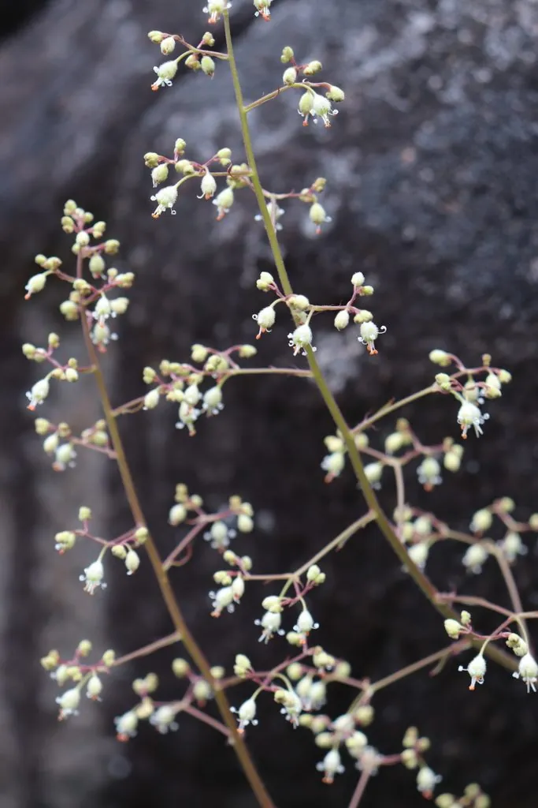

花卉与草本 · 植物界
矾根 Heuchera micrantha

虎耳草科多年生草本，叶片色彩丰富，夏季开细小钟状花，是园林中重要的观叶植物，原产北美西部。
- 分类
- 门被子植物门纲木兰纲目虎耳草目科虎耳草科属矾根属
- 栖息环境
- 北美西部的林下与岩石坡地，喜半阴湿润
- 地理分布
- 原产北美西部；中国各地园林引种栽培
- 保护级别
- 暂无评估；中国未列入国家重点保护野生植物名录
物种志
矾根为虎耳草科矾根属多年生草本，株高 20–50 厘米，地下具短根状茎。叶基生，圆形至心形，边缘具浅裂，叶色有绿、黄、橙、红、紫等，叶脉明显。花葶细长，圆锥花序着生多数小花，花冠钟状，白色至粉色，花期 4–6 月；果实为蒴果。
矾根原产北美西部，中国各地园林引种栽培，喜半阴湿润的环境，耐寒性较强，适宜疏松肥沃、排水良好的土壤。它叶色丰富、四季可赏，是园林中重要的观叶植物，常植于林下、花境与岩石园；与玉簪、落新妇等耐阴植物配植效果良好，是花境中的百搭材料。栽培以分株繁殖为主，夏季需遮阴、避免积水，叶色在凉爽季节最为鲜艳。
形态与习性
- 株高20–50 厘米，叶基生
- 叶色绿、黄、橙、红、紫等
- 花期4–6 月，花小、钟状
- 光照喜半阴，忌强光暴晒
- 水分喜湿润，忌积水
- 土壤疏松肥沃、排水良好的土壤
- 主要用途林下观叶、花境与岩石园
趣味知识
- 矾根最出名的是叶片色彩，园艺品种多达数百个。
- 它的花葶细长，小花像一串串小铃铛。
- 矾根耐寒性较强，在北方可露地越冬。
- 夏季高温时叶色会变淡，凉爽季节色彩最鲜艳。